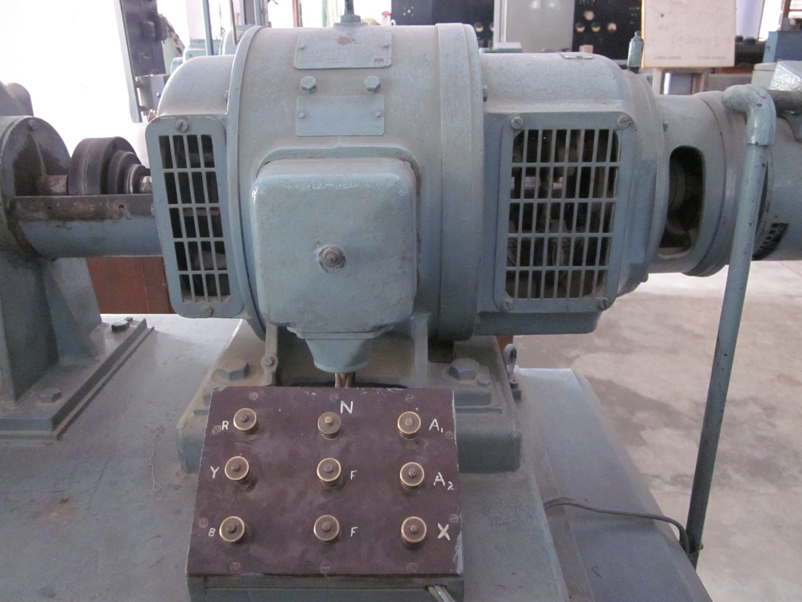

Back to Homepage
Short Circuit Test on Alternator
If vs Isc Characteristic
Adjust the field voltage using the slider on the right to observe the changes in Field Current (If) and Short Circuit Current (Isc). The graph plots the direct proportional relationship between the two values during a short circuit condition.

0 V